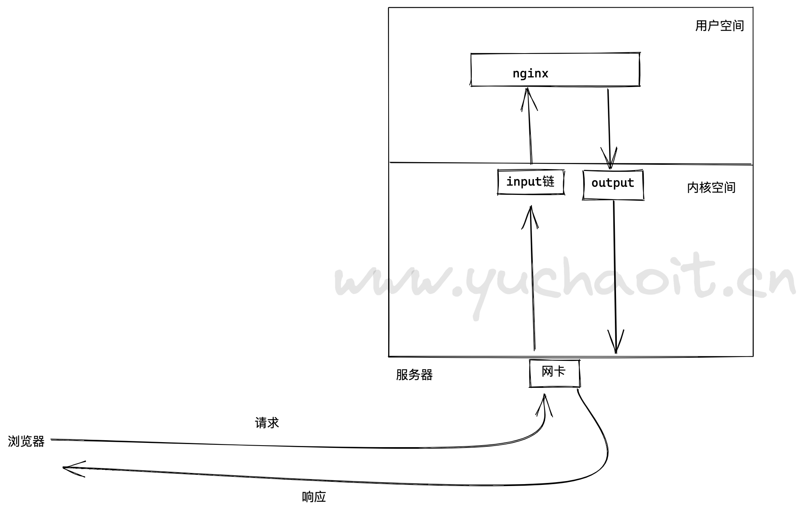
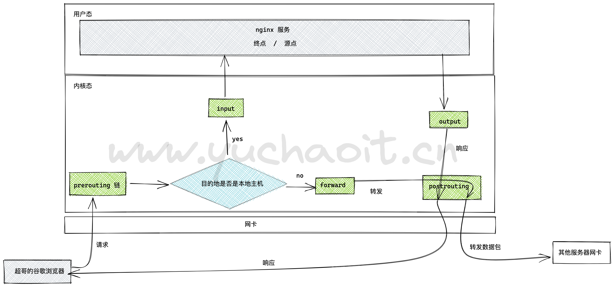
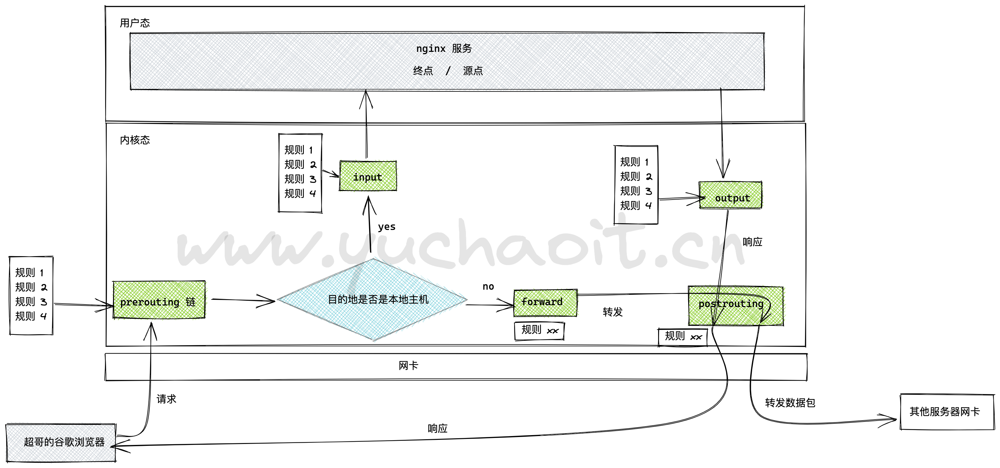
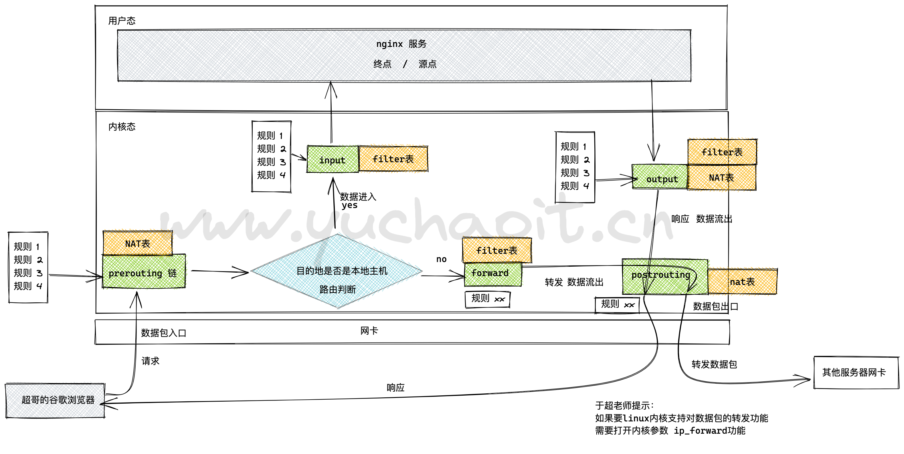
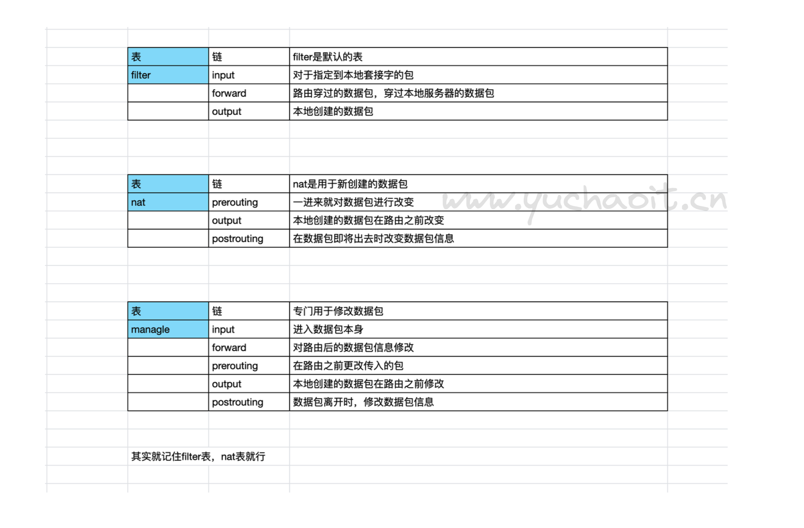
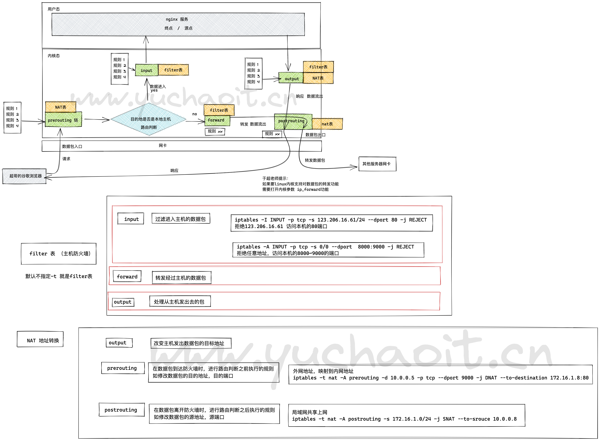
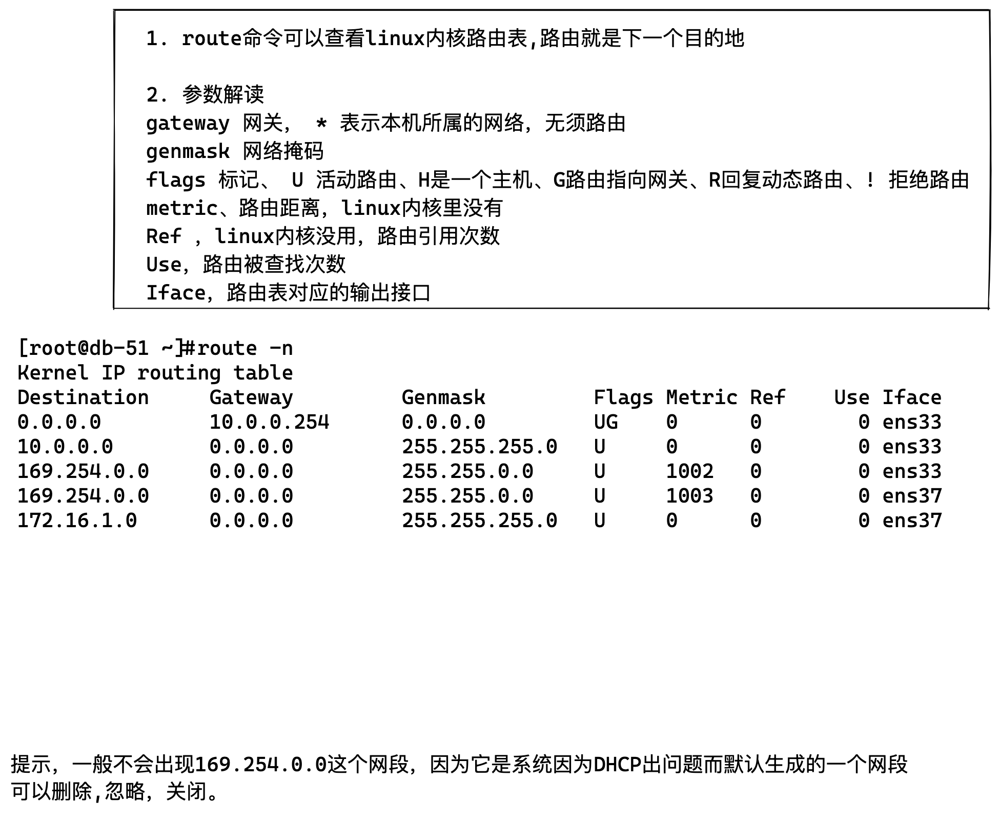

第一章：iptables防火墙安全
服务器防火墙介绍
防火墙是什么
防火墙好比一堵真的墙，能够隔绝些什么，保护些什么。
防火墙的本义是指古代构筑和使用木制结构房屋的时候，为防止火灾的发生和蔓延，人们将坚固的石块堆砌在房屋周围作为屏障，这种防护构筑物就被称之为“防火墙”。其实与防火墙一起起作用的就是“门”。
如果没有门，各房间的人如何沟通呢，这些房间的人又如何进去呢？当火灾发生时，这些人又如何逃离现场呢？
这个门就相当于我们这里所讲的防火墙的“安全策略”，所以在此我们所说的防火墙实际并不是一堵实心墙，而是带有一些小孔的墙。
这些小孔就是用来留给那些允许进行的通信，在这些小孔中安装了过滤机制，就是防火墙的过滤策略了。
防火墙的作用
防火墙具有很好的保护作用。入侵者必须首先穿越防火墙的安全防线，才能接触目标计算机。
防火墙的功能
防火墙对流经它的网络通信进行扫描，这样能够过滤掉一些攻击，以免其在目标计算机上被执行。防火墙还可以关闭不使用的端口。而且它还能禁止特定端口的流出通信。
最后，它可以禁止来自特殊站点的访问，从而防止来自不明入侵者的所有通信。
防火墙概念
防火墙一般有硬件防火墙和软件防火墙
硬件防火墙：在硬件级别实现部分防火墙功能，另一部分功能基于软件实现，性能高，成本高。
软件防火墙：应用软件处理逻辑运行于通用硬件平台之上的防火墙，性能低，成本低。
软件防火墙
Linux提供的软件防火墙，名为iptables，它可以理解为是一个客户端代理，通过iptables的代理，将用户配置的安全策略执行到对应的安全框架中，这个安全框架称之为netfilter。
iptables是一个命令行的工具，位于用户空间，我们用这个工具操作真正的框架，也就是netfilter
真正实现流量过滤的防火墙框架是netfilter，位于内核空间，它俩共同组成了Linux的软件防火墙，一般用来代替昂贵的硬件防火墙，实现数据包过滤，网络地址转换等。
在Centos7发行版本下，firewalld防火墙又取代了iptables防火墙
iptables是将配置好的规则交给内核层的netfilter网络过滤器来处理
filrewalld服务是将配置好的防火墙规则交给内核层的nftables网络过滤器处理
这俩工具二选一即可，都只是命令行工具，
1.iptables是什么
iptables是开源的基于数据包过滤的防火墙工具。
2.Iptables使用场景
1、主机防火墙（filter表的INPUT链）。
2、局域网共享上网(nat表的POSTROUTING链)。半个路由器，NAT功能。
3、端口及IP映射(nat表的PREROUTING链)，硬防的NAT功能。
4、IP一对一映射。
3.商用防火墙品牌
华为
深信服
思科
H3C
Juniper
天融信
飞塔
网康
绿盟科技
金盾
奇安信
第2章 iptables工作流程
iptables是采用数据包过滤机制工作的，所以它会对请求的数据包的包头数据进行分析，并根据我们预先设定的规则进行匹配来决定是否可以进入主机。
- 1.防火墙是一层层过滤的。实际是按照配置规则的顺序从上到下，从前到后进行过滤的。
- 2.如果匹配上了规则，即明确表明是阻止还是通过，此时数据包就不在向下匹配新规则了。
- 3.如果所有规则中没有明确表明是阻止还是通过这个数据包，也就是没有匹配上规则，向下进行匹配，直到匹配默认规则得到明确的阻止还是通过。
- 4.防火墙的默认规则是对应链的所有的规则执行完以后才会执行的（最后执行的规则）。
第3章 iptables四表五链
0.iptables基础
我们知道iptables是按照规则来办事的，我们就来说说规则（rules），规则其实就是网络管理员预定义的条件，规则一般的定义为”如果数据包头符合这样的条件，就这样处理这个数据包”。
规则存储在内核空间的信息包过滤表中，这些规则分别指定了源地址、目的地址、传输协议（如TCP、UDP、ICMP）和服务类型（如HTTP、FTP和SMTP）等。
当数据包与规则匹配时，iptables就根据规则所定义的方法来处理这些数据包，如放行（accept）、拒绝（reject）和丢弃（drop）等。
配置防火墙的主要工作就是添加、修改和删除这些规则。
1.请求响应与防火墙
一个简单的说法，你部署了一个nginx服务器，如何确认用户可以访问到nginx，以及nginx如何可以给用户返回数据？我们以前都是直接关闭了防火墙功能。
开启防火墙后会是如何？
[root@yuanlai-school ~]# iptables -L
Chain INPUT (policy ACCEPT)
target prot opt source destination
Chain FORWARD (policy ACCEPT)
target prot opt source destination
Chain OUTPUT (policy ACCEPT)
target prot opt source destination
会发现这里有3个chain，表示三个链，链是干啥的？

什么是netfilter
网络过滤器
Netfilter，在Linux内核中的一个软件框架，用于管理网络数据包。
不仅具有网络地址转换的功能，也具备数据包内容修改、以及数据包过滤等防火墙功能
netfilter是一个linux内核自带的一个网络协议处理软件，提供过滤、修改数据包的功能。
主要定义了5个链，来定义数据报文的动态。
- prerouting链---路由前
- input 链----本地上送
- output 链----本地发送
- forward 链----转发
- post routing 链---路由后
这些链决定了数据报文，到底应该是 accept方形，还是drop丢弃。
链是我们关心，以及要操作的一个重要点，也就是定义了防火墙的一条条规则。
nginx > server
1. 浏览器访问nginx，client的数据报文到达服务器网卡，此时的tcp/ip信息要经过内核的处理，再到达用户空间的nginx。
10.0.0.1:33224 > 10.0.0.7:80 此时建立了一个TCP
2.当nginx响应时，数据传输过程就成了
nginx > client ，数据要从nginx 到达 客户端的目标地址。
3. 请求与响应的过程，都出现了
源地址 目标地址
4.这个请求，响应的数据报文，都在在内核空间里，我们如果要实现防火墙的功能，也就是到底要允许、还是拒绝这些数据包？
我们就得设置关卡，被关卡检查后：
符合条件的才能被放行，accept
不符合的就被阻止，drop。
因此这个关卡，最基本的就出现了input关卡、output关卡
其实这个关卡，就叫做链的概念。
2.其他链也来了
刚才我们描述的关系，是很明确的，源地址、目的地
10.0.0.1:32447 > 10.0.0.7:80
但有时候，客户端的报文请求目标地址，可能不是当前机器啊，而是另一台机器，还好netfilter支持forward转发数据包的功能。
因此就引入了iptables的其他三个链，关卡
路由前----prerouting链
转发链---forward链
路由后----postrouting链
图解五链

也就是说，我们打开iptables防火墙后，数据报文会按如图的走向，数据报文经过不同的链的规则，产生不同的动作
1. 报文若是要转发，就不走input，走forward链，最终从postrouting链离开服务器
2. 报文若是直接发给当前服务器，直接走input进入应用
常见链的处理关系
1. 本服务器进程处理， client > prerouting > input > output > postrouting > client
2. 数据包经过本机转发 client > prerouting > forward > postrouting
链的作用

关卡为什么会被称作链
是因为，数据报文再经过关卡的时候，会有层层规则，这很多条规则被串成一个链的概念。
简单说就是，当数据报文要经过 某个链的时候，要遵守该链的每一个规则，如果有xx规则成立了，执行对应的动作。
3.表的概念也来了
链的概念我们已经有了，就是一系列对数据包限制行为的规则，例如
A类规则是对IP的过滤
B类规则是对数据包的修改转发
因此iptables里将相同功能的规则，合并为了表的概念，默认有4种功能的表，使用iptables的功能，也就被这4个表的功能限定了。
filter表，数据包过滤
nat表，网络地址转发
mangle表，拆解报文，修改报文
raw表，取消链路跟踪
一般只会用到filter、nat两个表的功能。
4.图解数据包经过防火墙的完整流程

5.解释表与链的作用

filter表
1. filter是防火墙默认表，主要和主机自身数据包有关，负责防火墙的数据包进入、离开；
filer表有三个链，控制服务器防火墙功能
- input，过滤目标地址就是本机的数据包
- forward，转发经过本机的数据包，实现数据包转发的功能
- output，本机需要发出去的数据包
NAT表
1. nat表，主要负责网络地址转换，也就是可以修改
源地址的ip:port
目标地址的ip:port
使用场景：
和主机本身无关，而是实现如局域网共享上网，或者端口服务转换。
工作场景：
- 利用iptables实现网关功能，实现postrouting共享上网
- 实现外部IP地址 1 对1的映射关系，实现dmz网络区域
- web服务的，单个端口的映射关系（postrouting）
因此nat表就是实现，如交换机的功能。
三个链
- ouput链，和主机放出去的数据包有关，修改主机发出的数据包目的地。
- prerouting链，数据包到达防火墙(filter)前，进行规则判断，如修改数据包的目的地，目的端口。
如将80端口的请求数据包，转发到9090端口
- postrouting链，数据包离开防火墙之后，修改数据包的源地址。
如，笔记本，vmware的机器，都是局域网的地址，但是被路由器将源地址，改成了公网的地址。
6.一张图，搞清楚iptables的作用

7.简单理解防火墙规则（链的作用）
具体5条链如下
路由选择前处理数据包，prerouting链
处理流入的数据包，input链
处理流出的数据包，output链
处理转发的数据包，forward链
进行路由选择后处理数据包，postrouting链
正常情况下，服务器内网向外网发出的流量一般是良性可控的，主要处理的都是input链，从外网流入的流量，需要严格把控，能够很大程度防止恶意流量，造成服务器隐患。
防火墙的规则链，这在生活里很常见，例如外卖禁止入内、禁止小贩入内、共享单车禁止入内、车辆进入要登记
等等。
这些校园、小区门口都有一些规则，用于控制外来的人员，这就好比服务器设置的防火墙规则，禁止哪些流量进入。
好比现在有一个人送外卖，直接第一条规则就禁止入内了，外卖小哥只能离开或是想其他办法
现在又来了一个骑着共享单车的想要进入校园，他不是送外卖的，第一条规则通过，但是第二条规则，给他拦下来了。
现在有一个学生要进去校园，两条规则都不符合，如果默认规则是放行，学生则可以直接进入校园。
8.匹配规则后的动作
校园大门口的保安，除了在门上贴上告示，定义一些规则链以外，在学生进入后还得有一些动作，好比服务器流量进入后，防火墙还得有一些动作去处理流量。
- accept，允许数据包通过
- reject，拒绝数据包通过，还会给客户端一个响应，告知它被拒绝了
- log，在
/var/log/message中记录日志，然后数据包传递给下一个规则，不做处理 - drop，直接丢弃数据包，不给任何回应，客户端会以为自己的请求扔进大海了，直到请求超时报错
- SNAT，源地址转换，解决内网用户用同一个公网的问题
- DNAT，目标地址转换
- redirect，在本机做端口映射
【drop和reject区别】
例如小明在家里，忽然有陌生人敲门，发现是自己的朋友来找自己出去玩，但是不想去，因此拒绝了他们（这就是reject）
如果小明透过猫眼发现门外是一个坏人敲门，小明闷不吭声，假装自己不在家（这就是drop）
9.linux路由表查看

主机路由
主机路由是路由选择表中，指向单个IP地址或主机名的路由记录。
主机路由的Flags字段为H。
例如，在下面的示例中，本地主机通过IP地址192.168.1.1的路由器到达IP地址为10.0.0.10的主机。
Destination Gateway Genmask Flags Metric Ref Use Iface
----------- ------- ------- ----- ------ --- --- -----
10.0.0.10 192.168.1.1 255.255.255.255 UH 0 0 0 eth0
网络路由
网络路由是代表主机可以到达的网络。
网络路由的Flags字段为N。
例如，在下面的示例中，本地主机将发送到网络192.19.12的数据包转发到IP地址为192.168.1.1的路由器。
Destination Gateway Genmask Flags Metric Ref Use Iface
----------- ------- ------- ----- ----- --- --- -----
192.19.12 192.168.1.1 255.255.255.0 UN 0 0 0 eth0
默认路由
当主机不能在路由表中查找到目标主机的IP地址或网络路由时，数据包就被发送到默认路由（默认网关）上。
默认路由的Flags字段为G。
例如，在下面的示例中，默认路由是IP地址为192.168.1.1的路由器。
[root@db-51 ~]#route -n
Kernel IP routing table
Destination Gateway Genmask Flags Metric Ref Use Iface
0.0.0.0 10.0.0.254 0.0.0.0 UG 0 0 0 ens33
10.0.0.0 0.0.0.0 255.255.255.0 U 0 0 0 ens33
169.254.0.0 0.0.0.0 255.255.0.0 U 1002 0 0 ens33
169.254.0.0 0.0.0.0 255.255.0.0 U 1003 0 0 ens37
172.16.1.0 0.0.0.0 255.255.255.0 U 0 0 0 ens37
也就是，最终数据包，走10.0.0.254这个网关出口。
route命令
# 添加到主机的路由
# route add -host 192.168.1.2 dev eth0
# route add -host 10.20.30.148 gw 10.20.30.40 #添加到10.20.30.148的网关
# 添加到网络的路由
# route add -net 10.20.30.40 netmask 255.255.255.248 eth0 #添加10.20.30.40的网络
# route add -net 10.20.30.48 netmask 255.255.255.248 gw 10.20.30.41 #添加10.20.30.48的网络
# route add -net 192.168.1.0/24 eth1
# 添加默认路由
# route add default gw 192.168.1.1
# 查看默认路由
[root@db-51 ~]#route
Kernel IP routing table
Destination Gateway Genmask Flags Metric Ref Use Iface
default gateway 0.0.0.0 UG 0 0 0 ens33
10.0.0.0 0.0.0.0 255.255.255.0 U 0 0 0 ens33
link-local 0.0.0.0 255.255.0.0 U 1002 0 0 ens33
link-local 0.0.0.0 255.255.0.0 U 1003 0 0 ens37
172.16.1.0 0.0.0.0 255.255.255.0 U 0 0 0 ens37
# 删除路由
# route del -host 192.168.1.2 dev eth0:0
# route del -host 10.20.30.148 gw 10.20.30.40
# route del -net 10.20.30.40 netmask 255.255.255.248 eth0
# route del -net 10.20.30.48 netmask 255.255.255.248 gw 10.20.30.41
# route del -net 192.168.1.0/24 eth1
# route del default gw 192.168.1.1
设置包转发
在 CentOS 中默认的内核配置已经包含了路由功能，但默认并没有在系统启动时启用此功能。
开启 Linux 的路由功能可以通过调整内核的网络参数来实现。
要配置和调整内核参数可以使用 sysctl 命令。
例如：要开启 Linux 内核的数据包转发功能可以使用如下的命令。
# sysctl -w net.ipv4.ip_forward=1
这样设置之后，当前系统就能实现包转发，但下次启动计算机时将失效。
为了使在下次启动计算机时仍然有效，需要将下面的行写入配置文件/etc/sysctl.conf。
# vi /etc/sysctl.conf
net.ipv4.ip_forward = 1
用户还可以使用如下的命令查看当前系统是否支持包转发。
# sysctl net.ipv4.ip_forward